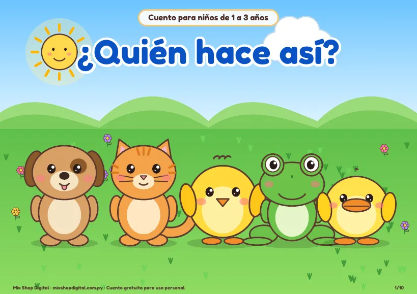
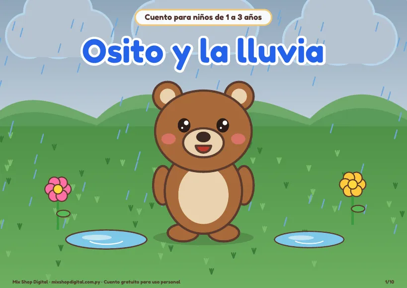
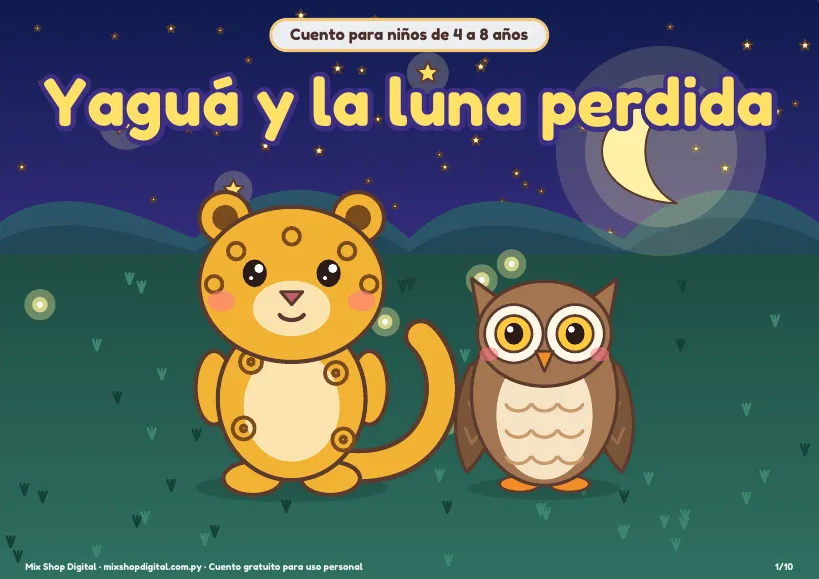
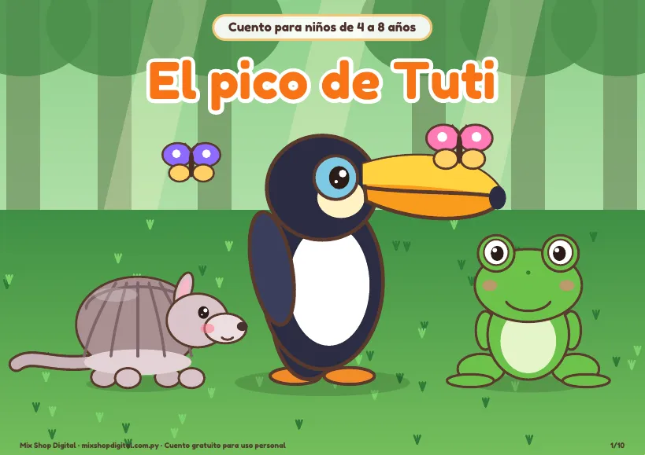
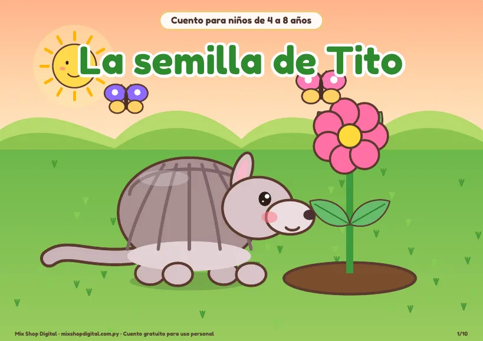
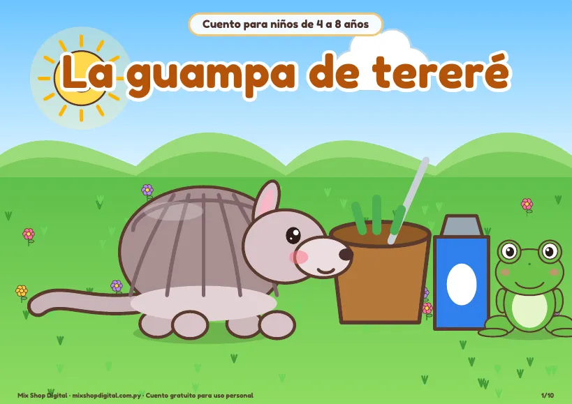
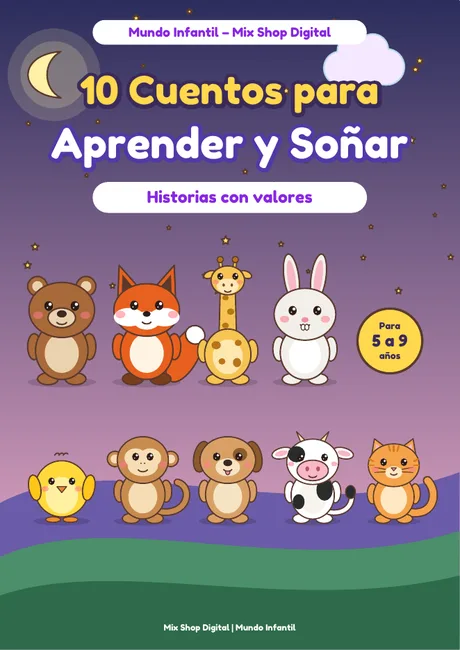

¿Dónde está Tito?
Tito se esconde y los más chiquitos lo buscan en cada página. Un cuento de escondidas.
- A todo color
- 1 a 3 años
Diez cuentos ilustrados a todo color, con Tito, Luna, Rani, Yaguá y Tuti. Descargalos, imprimilos y leelos juntos antes de dormir o en el aula.
Tito se esconde y los más chiquitos lo buscan en cada página. Un cuento de escondidas.

Luna la lechuza despide al día y a todos sus amigos antes de dormir.

¡Croac, pío, guau, miau, cuac! Un cuento para aprender los sonidos de los animales.

Rani descubre los colores uno por uno hasta formar un arcoíris.

Osito aprende que un día de lluvia también puede ser divertido.

Una noche sin luna: Yaguá y sus amigos salen a buscarla por el monte.

Tuti cree que su pico es demasiado grande, hasta que descubre para qué sirve.

Rani quiere ganar la carrera, pero encuentra algo más importante que llegar primero.

Tito planta una semillita y aprende que las cosas lindas necesitan paciencia.

En un día de calor, Tito comparte su tereré y descubre la alegría de compartir.

Historias con valores: compartir, decir la verdad, la paciencia, la amistad. Cada cuento trae una enseñanza, cinco preguntas y una actividad.
Sí. No pedimos registro ni datos: descargás el PDF y listo.
En hoja A4 horizontal, a color. Podés imprimirlos a doble faz y abrocharlos para armar un librito.
Una tapa, ocho páginas de historia y una página final con preguntas o un juego para conversar con los chicos.
Sí, podés imprimirlos para tu casa o tu aula. No está permitido venderlos ni subirlos a otros sitios; si querés compartirlos, pasá el enlace de esta página.
Contanos qué historia querés ver en los próximos cuentos y la tenemos en cuenta.